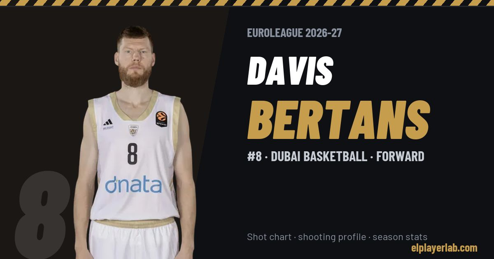

Dubai Basketball · Euroleague 2026-27
Davis Bertans
#8 · Forward · Dubai Basketball · 2026-27 · 2 games · 3.0 pts · 1.0 reb · 0.0 ast a game

- Number
- 8
- Position
- Forward
- Height
- 210 cm
- Weight
- 100 kg
- Born
- 1992-11-12
- Country
- Latvia
Career
- Dubai 2024-2027
- Charlotte Hornets (NBA) 2023-2024
- Oklahoma City Thunder (NBA) 2023-2024
- Dallas Mavericks (NBA) 2021-2022
- Washington Wizards (NBA) 2019-2020
- Austin Spurs (loan) 2016-2017
- San Antonio Spurs (NBA) 2016-2017
- Saski Baskonia 2014-2016
- Partizan 2012-2014
- Olimpija Ljubljana 2010-2012
- Barons 2010
- Keizarmezs (loan) 2009
- ASK Riga (loan) 2009
- BAA Riga 2008-2010
- ASK Kadeti 2007-2008
Euroleague Player Lab: shot charts, shooting profiles and season stats for every player, rebuilt after every game.